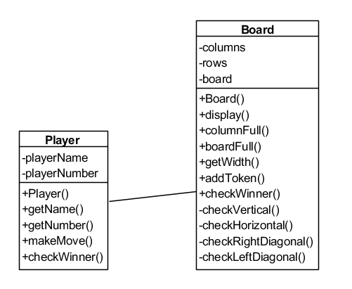
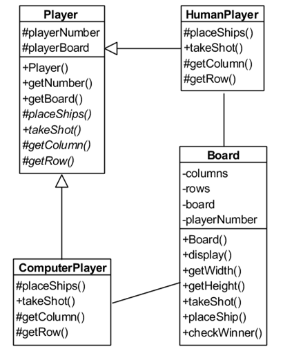
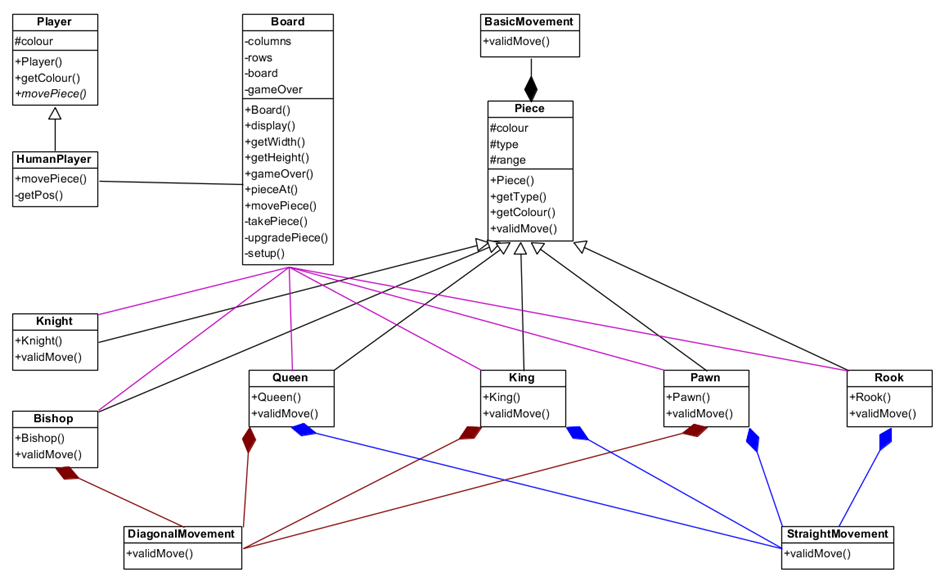

For each of the three programming projects below, there are two versions of the skeleton code:
- The Extended versions provide only the main method of the program as a starting point
- The Basic versions, in addition to the main method, also include the program’s classes and select methods.
Project 1: Four in a Row
Four in a Row is a game in which players take turns adding tokens to one of the columns on the game board. Tokens fall to the lowest position in the chosen column that does not already have a token in it. Once one of the players has placed four of their tokens in a straight line (either vertically, horizontally or diagonally), they win the game. If the board is full and no player has won, then the game ends in a draw.
Using the following UML class diagram and class descriptions to help you, create a version of Four in a Row. The game must allow for a minimum of two and a maximum of four players, allow each player to enter their name (duplicate names should not be accepted) and give the players the ability to choose how many rows (between four and 10), and how many columns (between four and 10) the game board should have. You may use the Four in a Row skeleton code to help you.

Player
| Attribute/Method |
Description |
| playerName |
Specifies this player’s name. |
| playerNumber |
Specifies the number of this player’s token. |
| Player() |
Creates a new Player object. |
| getName() |
Accessor for playerName. |
| getNumber() |
Accessor for playerNumber. |
| makeMove() |
Asks the player to pick a column to place their token in until a valid non-full column is given, and adds their token to the given column. |
| checkWinner() |
Returns the player’s name if they have won, or "Nobody" if they haven’t. |
Board
| Attribute/Method |
Description |
| columns |
Specifies the number of columns on the game board. |
| rows |
Specifies the number of rows on the game board. |
| board |
Keeps track of which player’s token (if any) is stored at each location on the game board. |
| Board() |
Creates a new Board object. |
| display() |
Displays the current state of the board. |
| columnFull() |
Checks whether a given column is full. |
| boardFull() |
Checks whether the entire board is full. |
| getWidth() |
Accessor for columns. |
| addToken() |
Adds a given token to a given column. |
| checkWinner() |
Checks the board for a winner, returning the winner’s playerNumber or 0 if there is no winner. |
| checkVertical() |
Checks for vertical lines of four matching tokens, returning the playerNumber of the player who made the line, or 0 if there are no vertical lines of four. |
| checkHorizontal() |
Checks for horizontal lines of four matching tokens, returning the playerNumber of the player who made the line, or 0 if there are no horizontal lines of four. |
| checkRightDiagonal() |
Checks for left-to-right diagonal lines of four matching tokens, returning the playerNumber of the player who made the line, or 0 if there are no high-left to low-right diagonal lines of four. |
| checkLeftDiagonal() |
Checks for right-to-left diagonal lines of four matching tokens, returning the playerNumber of the player who made the line, or 0 if there are no high-right to low-left lines of four. |
Project 2: Sinking Ships
Sinking Ships is a game in which two players place a number of ships of various length on their own board, which is hidden from the other player. Players then take turns calling out one of the tiles on their opponent’s board. Their opponent then tells them whether the shot hit or missed any of their ships. Once one player has hit every tile that contains a ship on their opponent’s board, they win the game.
Using the following UML class diagram and class descriptions to help you, create a version of Sinking Ships. The game must have one human player, and one player controlled by the computer (the computer player can be made to target random tiles). The player should be able to choose how many rows (between 10 and 26) and how many columns (between 10 and 26) the game boards should have. Players cannot shoot tiles that they have already shot, and before the human player takes their shot, they should have the option to look at their own board (showing the location of their ships and the tiles that the computer player has taken shots at and whether those shots hit or missed) or the opponent’s board (showing the tiles that the human player has taken shots at, and whether those shots hit or missed, but not showing the location of the opponent’s ships). Player input should be given as a number, to indicate the column of their chosen location, and a letter, to indicate the row (first row is A, second row is B, etc.). You may use the Sinking Ships skeleton code to help you.

Board
| Attribute/Method |
Description |
| columns |
Specifies the number of columns on the game board. |
| rows |
Specifies the number of rows on the game board. |
| board |
Keeps track of the ship locations and shot locations on the game board. |
| playerName |
Specifies the number of the player that the board belongs to. |
| Board() |
Creates a new Board object. |
| display() |
Displays the current state of the board, only showing ship locations if the player is looking at their own board. |
| getWidth() |
Accessor for columns. |
| getHeight() |
Accessor for rows. |
| takeShot() |
Takes a shot at the given location on the board. |
| placeShip() |
Asks the player to pick a location on the board and an orientation (vertical or horizontal) for a ship of a given length until a valid location and orientation are given that will fit the ship on the board, and then adds the ship to the board as specified. |
| checkWinner() |
Checks whether all of the ships on the board have been sunk. |
Player
| Attribute/Method |
Description |
| playerNumber |
Specifies this player’s number. |
| playerBoard |
Specifies this player’s board. |
| Player() |
Creates a new Player object. |
| getNumber() |
Accessor for playerNumber. |
| getBoard() |
Accessor for playerBoard. |
HumanPlayer
| Attribute/Method |
Description |
| placeShips() |
Places all of this player’s ships onto their board, displaying messages to tell the player which ship they are placing and to confirm that they have successfully placed each ship. |
| takeShot() |
Gets a valid location on a board and takes a shot at it, displaying a message and giving the player another chance to take a shot if they select an invalid target. |
| getColumn() |
Gets a valid column on a board from player input, displaying a message and giving the player another chance to select a column if they select an invalid column. |
| getRow() |
Gets a valid row on a board from player input, displaying a message and giving the player another chance to select a row if they select an invalid row. |
ComputerPlayer
| Attribute/Method |
Description |
| placeShips() |
Places all of this player’s ships onto their board, displaying one message to say that the computer is placing its ships and another message to say that all of the computer’s ships have been placed. |
| takeShot() |
Gets a valid location on a board and takes a shot at it. |
| getColumn() |
Gets a valid column on a board. |
| getRow() |
Gets a valid row on a board. |
Project 3: Chess
Chess
|
This activity uses the following files:
|
Chess is a game played on an 8 × 8 game board whereby two players have a number of pieces, including one King. Players take turns to move one of their pieces. Each piece has different rules for how it can move around the board, and when one piece is moved onto a tile containing one of the opponent’s pieces, the opponent’s piece is taken out of the game. The winner is the player who manages to take their opponent’s King.
Using the following UML class diagram and class descriptions to help you, create a version of Chess. When it is a player’s turn, they must select the tile with the piece that they would like to move (if this tile doesn’t contain one of their pieces, a message should be displayed to tell the player that they don’t have a piece on that tile and they should be asked for their selection again) and then select the tile that they would like to move this piece to (if this is not a valid move, a message should be displayed to tell the player that this move is invalid and they should be asked for their move again). Player input should be given as a number, to indicate the column of their chosen location, and a letter, to indicate the row (first row is A, second row is B, etc.). You may use the Chess skeleton code to help you.

Board
| Attribute/Method |
Description |
| columns |
Specifies the number of columns on the game board. |
| rows |
Specifies the number of rows on the game board. |
| board |
Keeps track of the piece locations on the game board. |
| gameOver |
Specifies whether or not the game has been won. |
| Board() |
Creates a new Board object. |
| display() |
Displays the current state of the board. |
| getWidth() |
Accessor for columns. |
| getHeight() |
Accessor for rows. |
| gameOver() |
Accessor for gameOver. |
| pieceAt() |
Returns the piece at a given location, or none if that location has no piece. |
| movePiece() |
Tries to make a given move, displaying a message saying what move has been made or a message saying that the move is invalid. |
| takePiece() |
Displays a message to say which piece has been taken by which piece and sets gameOver = True if the piece which has been taken is a king. |
| upgradePiece() |
Replaces a pawn with a queen if it reaches the end of the board. |
| setUp() |
Sets up the board with all pieces in their starting positions. |
Player
| Attribute/Method |
Description |
| colour |
Specifies this player’s colour. |
| Player() |
Creates a new Player object. |
| getColour() |
Accessor for colour. |
HumanPlayer
| Attribute/Method |
Description |
| movePiece() |
Asks a player for the start and end locations of their move until they provide two valid locations, then makes the move and returns whether or not the game has been won. |
| getPos() |
Checks that the player has given a valid location, returning an array of the row and column numbers if one location has been passed to getPos or making the move on the board if two locations have been passed. |
Piece
| Attribute/Method |
Description |
| colour |
Specifies the colour of this piece. |
| type |
Specifies the name of this type of piece. |
| range |
Specifies the number of tiles this piece can move in a turn. |
| Piece() |
Creates a new Piece object. |
| getType() |
Accessor for type. |
| getColour() |
Accessor for colour. |
| validMove() |
Gets a valid row on a board. |
Pawn
| Attribute/Method |
Description |
| Pawn() |
Creates a new Pawn object, with type = "pawn". |
| validMove() |
A pawn can move one tile straight forward if there is no piece in front of it, or one tile diagonally forward if there is an enemy piece in that location. A pawn can move two tiles straight forward if it is in its starting position and there are no pieces on either of the two tiles in front of it. |
Knight
| Attribute/Method |
Description |
| Knight() |
Creates a new Knight object, with type = "knight". |
| validMove() |
A knight can move two tiles vertically and one tile horizontally, or two tiles horizontally and one tile vertically. A knight can jump over pieces. |
Rook
| Attribute/Method |
Description |
| Rook() |
Creates a new Rook object, with type = "rook". |
| validMove() |
A rook can move any number of tiles in a straight line as long as there are no pieces between it and the end tile. |
Bishop
| Attribute/Method |
Description |
| Bishop() |
Creates a new Bishop object, with type = "bishop". |
| validMove() |
A bishop can move any number of tiles in a diagonal line as long as there are no pieces between it and the end tile. |
Queen
| Attribute/Method |
Description |
| Queen() |
Creates a new Queen object, with type = "queen". |
| validMove() |
A Queen can make any move that a rook or bishop can make. |
King
| Attribute/Method |
Description |
| King() |
Creates a new King object, with type = "king". |
| validMove() |
A King can move one tile in any direction. |
BasicMovement
| Attribute/Method |
Description |
| validMove() |
Makes sure that the given move meets the basic criteria for a valid move for a piece. |
StraightMovement
| Attribute/Method |
Description |
| validMove() |
Makes sure that the given move meets the criteria for a valid move when moving in a straight line. |
DiagonalMovement
| Attribute/Method |
Description |
| validMove() |
Makes sure that the given move meets the criteria for a valid move when moving in a diagonal line. |